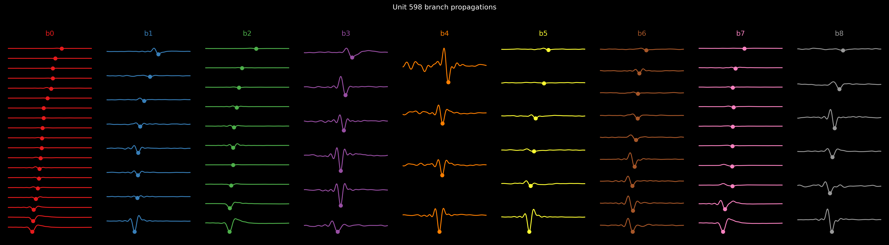
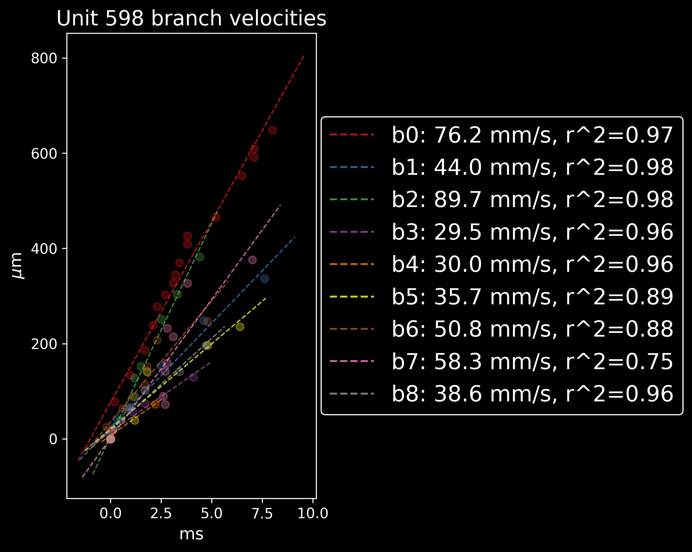
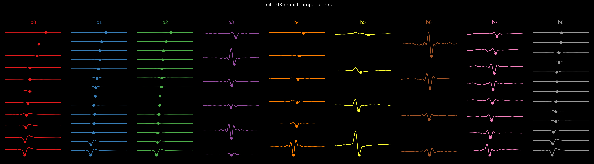
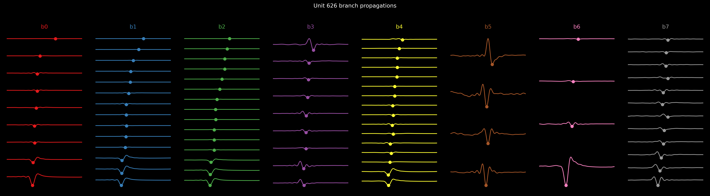
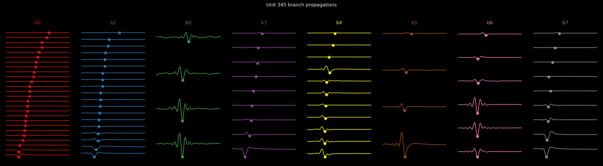

The time dimension of reconstruction. Each branch is a one-dimensional path along the arbor; voltage peak position vs distance from soma gives propagation; the slope gives conduction velocity. These are the quantitative outputs we'll compare across algorithms (Radivojevic vs axon_velocity_gtrs).

unit_0598 — branch propagations. Each panel is one of the 9 branches. X-axis = distance from soma along the branch (µm); Y-axis = time of voltage peak relative to spike (ms). The slope of each near-linear segment is the local conduction velocity along that branch. Anomalies — non-monotonic propagation, jumps, multi-modal — are signatures of tracking errors and the things the Radivojevic comparison should help disambiguate.
Velocity distribution + per-branch propagation (other high-branch units)

unit_0598 — branch velocities. Histogram or distribution view of per-branch conduction velocities for the same unit. Cortical axons typically 0.3–1.0 m/s; this plot is the per-unit summary statistic feeding population-level analysis.

unit_0193 — branch propagations. Second 9-branch unit. Comparing the propagation shapes across the two 9-branch units gives a sense of unit-to-unit variability for the same algorithm.

unit_0626 — branch propagations. 8-branch unit; useful for showing how branching pattern affects propagation profile.

unit_0345 — branch propagations. 7-branch unit. Long branches → longer propagation tails — these stress the algorithm's ability to track a peak that travels far from the soma.
Why these plots matter: branch counts, lengths, velocities, and propagation linearity are the numerical invariants we'll compare between algorithms (DC-001 differential checks). A visually plausible circle_recon can hide a kinked propagation profile; these plots catch that. They're also the natural input for a future "axon vs dendrite" classifier — velocity range + propagation shape are the signal-characteristic features.
Source: recon_outputs/units/<unit_id>/branch_qc/{propagations,velocities}/raw/*.png emitted by the recon stage's branch_qc phase.